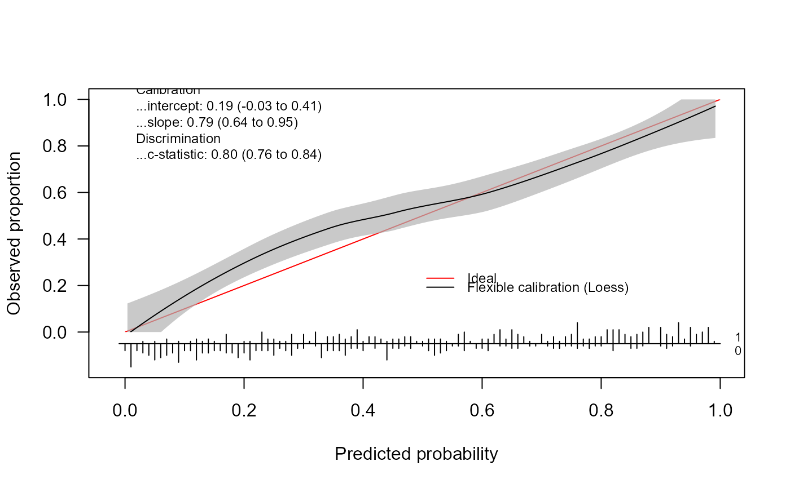
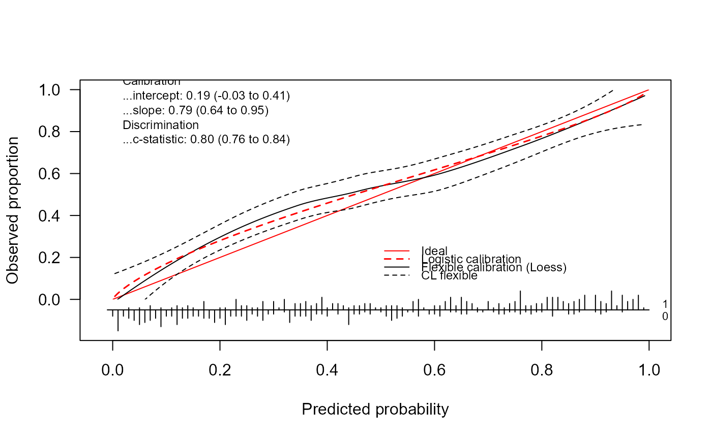
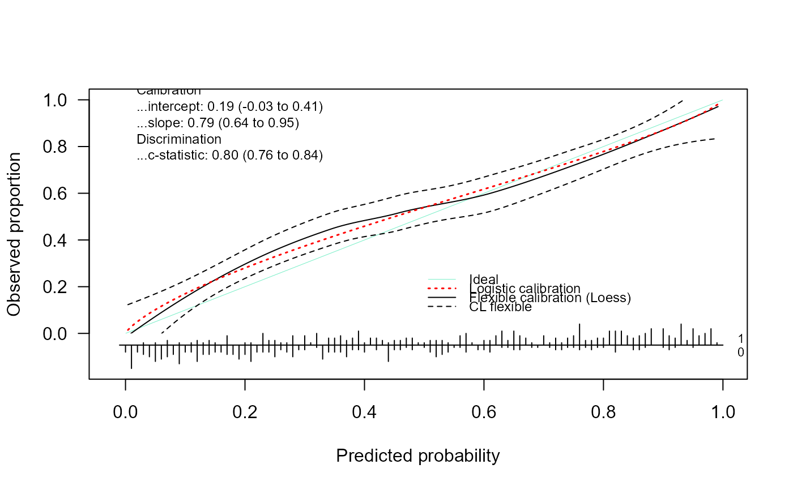

Calibration performance
val.prob.ci.2.RdThe function val.prob.ci.2 is an adaptation of val.prob from Frank Harrell's rms package,
https://cran.r-project.org/package=rms. Hence, the description of some of the functions of val.prob.ci.2
come from the the original val.prob.
The key feature of val.prob.ci.2 is the generation of logistic and flexible calibration curves and related statistics.
When using this code, please cite: Van Calster, B., Nieboer, D., Vergouwe, Y., De Cock, B., Pencina, M.J., Steyerberg,
E.W. (2016). A calibration hierarchy for risk models was defined: from utopia to empirical data. Journal of Clinical Epidemiology,
74, pp. 167-176
Usage
val.prob.ci.2(
p,
y,
logit,
group,
weights = rep(1, length(y)),
normwt = FALSE,
pl = TRUE,
smooth = c("loess", "rcs", "none"),
CL.smooth = "fill",
CL.BT = FALSE,
lty.smooth = 1,
col.smooth = "black",
lwd.smooth = 1,
nr.knots = 5,
logistic.cal = FALSE,
lty.log = 1,
col.log = "black",
lwd.log = 1,
xlab = "Predicted probability",
ylab = "Observed proportion",
xlim = c(-0.02, 1),
ylim = c(-0.15, 1),
m,
g,
cuts,
emax.lim = c(0, 1),
legendloc = c(0.5, 0.27),
statloc = c(0, 0.85),
dostats = TRUE,
cl.level = 0.95,
method.ci = "pepe",
roundstats = 2,
riskdist = "predicted",
cex = 0.75,
cex.leg = 0.75,
connect.group = FALSE,
connect.smooth = TRUE,
g.group = 4,
evaluate = 100,
nmin = 0,
d0lab = "0",
d1lab = "1",
cex.d01 = 0.7,
dist.label = 0.04,
line.bins = -0.05,
dist.label2 = 0.03,
cutoff,
las = 1,
length.seg = 1,
y.intersp = 1,
lty.ideal = 1,
col.ideal = "red",
lwd.ideal = 1,
allowPerfectPredictions = FALSE,
...
)Arguments
- p
predicted probability
- y
vector of binary outcomes
- logit
predicted log odds of outcome. Specify either
porlogit.- group
a grouping variable. If numeric this variable is grouped into
g.groupquantile groups (default is quartiles). Setgroup=TRUEto use thegroupalgorithm but with a single stratum forval.prob.- weights
an optional numeric vector of per-observation weights (usually frequencies), used only if
groupis given.- normwt
set to
TRUEto makeweightssum to the number of non-missing observations.- pl
TRUEto plot the calibration curve(s). IfFALSEno calibration curves will be plotted, but statistics will still be computed and outputted.- smooth
"loess"generates a flexible calibration curve based onloess,"rcs"generates a calibration curves based on restricted cubic splines (seercsandrcspline.plot),"none"suppresses the flexible curve. We recommend to use loess unless N is large, for example N>5000. Default is"loess".- CL.smooth
"fill"shows pointwise 95% confidence limits for the flexible calibration curve with a gray area between the lower and upper limits,TRUEshows pointwise 95% confidence limits for the flexible calibration curve with dashed lines,FALSEsuppresses the confidence limits. Default is"fill".- CL.BT
TRUEuses confidence limits based on 2000 bootstrap samples,FALSEuses closed form confidence limits. Default isFALSE.- lty.smooth
the linetype of the flexible calibration curve. Default is
1.- col.smooth
the color of the flexible calibration curve. Default is
"black".- lwd.smooth
the line width of the flexible calibration curve. Default is
1.- nr.knots
specifies the number of knots for rcs-based calibration curve. The default as well as the highest allowed value is 5. In case the specified number of knots leads to estimation problems, then the number of knots is automatically reduced to the closest value without estimation problems.
- logistic.cal
TRUEplots the logistic calibration curve,FALSEsuppresses this curve. Default isFALSE.- lty.log
if
logistic.cal=TRUE, the linetype of the logistic calibration curve. Default is1.- col.log
if
logistic.cal=TRUE, the color of the logistic calibration curve. Default is"black".- lwd.log
if
logistic.cal=TRUE, the line width of the logistic calibration curve. Default is1.- xlab
x-axis label, default is
"Predicted Probability".- ylab
y-axis label, default is
"Observed proportion".- xlim, ylim
numeric vectors of length 2, giving the x and y coordinates ranges (see
plot.window)- m
If grouped proportions are desired, average no. observations per group
- g
If grouped proportions are desired, number of quantile groups
- cuts
If grouped proportions are desired, actual cut points for constructing intervals, e.g.
c(0,.1,.8,.9,1)orseq(0,1,by=.2)- emax.lim
Vector containing lowest and highest predicted probability over which to compute
Emax.- legendloc
if
pl=TRUE, list with componentsx,yor vectorc(x,y)for bottom right corner of legend for curves and points. Default isc(.50, .27)scaled to lim. Uselocator(1)to use the mouse,FALSEto suppress legend.- statloc
the "abc" of model performance (Steyerberg et al., 2011)-calibration intercept, calibration slope, and c statistic-will be added to the plot, using statloc as the upper left corner of a box (default is c(0,.85). You can specify a list or a vector. Use locator(1) for the mouse,
FALSEto suppress statistics. This is plotted after the curve legends.- dostats
specifies whether and which performance measures are shown in the figure.
TRUEshows the"abc"of model performance (Steyerberg et al., 2011): calibration intercept, calibration slope, and c-statistic.TRUEis default.FALSEsuppresses the presentation of statistics in the figure. Ac()list of specific stats shows the specified stats. The key stats which are also mentioned in this paper are"C (ROC)"for the c statistic,"Intercept"for the calibration intercept,"Slope"for the calibration slope, and"ECI"for the estimated calibration index (Van Hoorde et al, 2015). The full list of possible statistics is taken fromval.proband augmented with the estimated calibration index:"Dxy", "C (ROC)", "R2", "D", "D:Chi-sq", "D:p", "U", "U:Chi-sq", "U:p", "Q", "Brier", "Intercept", "Slope", "Emax", "Brier scaled", "Eavg", "ECI". These statistics are always returned by the function.- cl.level
if
dostats=TRUE, the confidence level for the calculation of the confidence intervals of the calibration intercept, calibration slope and c-statistic. Default is0.95.- method.ci
method to calculate the confidence interval of the c-statistic. The argument is passed to
auc.nonpara.mwfrom the auRoc-package and possible methods to compute the confidence interval are"newcombe","pepe","delong"or"jackknife". Bootstrap-based methods are not available. The default method is"pepe"and here, the confidence interval is the logit-transformation-based confidence interval as documented in Qin and Hotilovac (2008). Seeauc.nonpara.mwfor more information on the other methods.- roundstats
specifies the number of decimals to which the statistics are rounded when shown in the plot. Default is 2.
- riskdist
Use
"calibrated"to plot the relative frequency distribution of calibrated probabilities after dividing into 101 bins fromlim[1]tolim[2]. Set to"predicted"(the default as of rms 4.5-1) to use raw assigned risk,FALSEto omit risk distribution. Values are scaled so that highest bar is0.15*(lim[2]-lim[1]).- cex, cex.leg
controls the font size of the statistics (
cex) or plot legend (cex.leg). Default is 0.75- connect.group
Defaults to
FALSEto only represent group fractions as triangles. Set toTRUEto also connect with a solid line.- connect.smooth
Defaults to
TRUEto draw smoothed estimates using a line. Set toFALSEto instead use dots at individual estimates- g.group
number of quantile groups to use when
groupis given and variable is numeric.- evaluate
number of points at which to store the
lowess-calibration curve. Default is 100. If there are more thanevaluateunique predicted probabilities,evaluateequally-spaced quantiles of the unique predicted probabilities, with linearly interpolated calibrated values, are retained for plotting (and stored in the object returned byval.prob.- nmin
applies when
groupis given. Whennmin\(> 0\),val.probwill not store coordinates of smoothed calibration curves in the outer tails, where there are fewer thannminraw observations represented in those tails. If for examplenmin=50, theplotfunction will only plot the estimated calibration curve from \(a\) to \(b\), where there are 50 subjects with predicted probabilities \(< a\) and \(> b\).nminis ignored when computing accuracy statistics.- d0lab, d1lab
controls the labels for events and non-events (i.e. outcome y) for the histograms. Defaults are
d1lab="1"for events andd0lab="0"for non-events.- cex.d01
controls the size of the labels for events and non-events. Default is 0.7.
- dist.label
controls the horizontal position of the labels for events and non-events. Default is 0.04.
- line.bins
controls the horizontal (y-axis) position of the histograms. Default is -0.05.
- dist.label2
controls the vertical distance between the labels for events and non-events. Default is 0.03.
- cutoff
puts an arrow at the specified risk cut-off(s). Default is none.
- las
controls whether y-axis values are shown horizontally (1) or vertically (0).
- length.seg
controls the length of the histogram lines. Default is
1.- y.intersp
character interspacing for vertical line distances of the legend (
legend)- lty.ideal
linetype of the ideal line. Default is
1.- col.ideal
controls the color of the ideal line on the plot. Default is
"red".- lwd.ideal
controls the line width of the ideal line on the plot. Default is
1.- allowPerfectPredictions
Logical, indicates whether perfect predictions (i.e. values of either 0 or 1) are allowed. Default is
FALSE, since we transform the predictions using the logit transformation to calculate the calibration measures. In case of 0 and 1, this results in minus infinity and infinity, respectively. ifallowPerfectPredictions = TRUE, 0 and 1 are replaced by 1e-8 and 1 - 1e-8, respectively.- ...
Value
An object of type CalibrationCurve with the following slots:
- call
the matched call.
- stats
a vector containing performance measures of calibration.
- cl.level
the confidence level used.
- Calibration
contains the calibration intercept and slope, together with their confidence intervals.
- Cindex
the value of the c-statistic, together with its confidence interval.
- warningMessages
if any, the warning messages that were printed while running the function.
- CalibrationCurves
The coordinates for plotting the calibration curves.
Details
When using the predicted probabilities of an uninformative model (i.e. equal probabilities for all observations), the model has no predictive value. Consequently, where applicable, the value of the performance measure corresponds to the worst possible theoretical value. For the ECI, for example, this equals 1 (Edlinger et al., 2022).
Note
In order to make use (of the functions) of the package auRoc, the user needs to install JAGS. However, since our package only uses the
auc.nonpara.mw function which does not depend on the use of JAGS, we therefore copied the code and slightly adjusted it when
method="pepe".
References
Edlinger, M, van Smeden, M, Alber, HF, Wanitschek, M, Van Calster, B. (2022). Risk prediction models for discrete ordinal outcomes: Calibration and the impact of the proportional odds assumption. Statistics in Medicine, 41( 8), pp. 1334– 1360
Qin, G., & Hotilovac, L. (2008). Comparison of non-parametric confidence intervals for the area under the ROC curve of a continuous-scale diagnostic test. Statistical Methods in Medical Research, 17(2), pp. 207-21
Steyerberg, E.W., Van Calster, B., Pencina, M.J. (2011). Performance measures for prediction models and markers : evaluation of predictions and classifications. Revista Espanola de Cardiologia, 64(9), pp. 788-794
Van Calster, B., Nieboer, D., Vergouwe, Y., De Cock, B., Pencina M., Steyerberg E.W. (2016). A calibration hierarchy for risk models was defined: from utopia to empirical data. Journal of Clinical Epidemiology, 74, pp. 167-176
Van Hoorde, K., Van Huffel, S., Timmerman, D., Bourne, T., Van Calster, B. (2015). A spline-based tool to assess and visualize the calibration of multiclass risk predictions. Journal of Biomedical Informatics, 54, pp. 283-93
Examples
# Load package
library(CalibrationCurves)
set.seed(1783)
# Simulate training data
X = replicate(4, rnorm(5e2))
p0true = binomial()$linkinv(cbind(1, X) %*% c(0.1, 0.5, 1.2, -0.75, 0.8))
y = rbinom(5e2, 1, p0true)
Df = data.frame(y, X)
# Fit logistic model
FitLog = lrm(y ~ ., Df)
# Simulate validation data
Xval = replicate(4, rnorm(5e2))
p0true = binomial()$linkinv(cbind(1, Xval) %*% c(0.1, 0.5, 1.2, -0.75, 0.8))
yval = rbinom(5e2, 1, p0true)
Pred = binomial()$linkinv(cbind(1, Xval) %*% coef(FitLog))
# Default calibration plot
val.prob.ci.2(Pred, yval)

#> Call:
#> val.prob.ci.2(p = Pred, y = yval)
#>
#> A 95% confidence interval is given for the calibration intercept, calibration slope and c-statistic.
#>
#> Dxy C (ROC) R2 D D:Chi-sq D:p
#> 0.60048690 0.80024345 0.35491505 0.30737619 154.68809420 0.00000000
#> U U:Chi-sq U:p Q Brier Intercept
#> 0.01384033 8.92016298 0.01156142 0.29353586 0.18549917 0.18828469
#> Slope Emax Brier scaled Eavg ECI
#> 0.79397043 0.08026282 0.25724275 0.05093656 0.37394083
# Adding logistic calibration curves and other additional features
val.prob.ci.2(Pred, yval, CL.smooth = TRUE, logistic.cal = TRUE, lty.log = 2,
col.log = "red", lwd.log = 1.5)

#> Call:
#> val.prob.ci.2(p = Pred, y = yval, CL.smooth = TRUE, logistic.cal = TRUE,
#> lty.log = 2, col.log = "red", lwd.log = 1.5)
#>
#> A 95% confidence interval is given for the calibration intercept, calibration slope and c-statistic.
#>
#> Dxy C (ROC) R2 D D:Chi-sq D:p
#> 0.60048690 0.80024345 0.35491505 0.30737619 154.68809420 0.00000000
#> U U:Chi-sq U:p Q Brier Intercept
#> 0.01384033 8.92016298 0.01156142 0.29353586 0.18549917 0.18828469
#> Slope Emax Brier scaled Eavg ECI
#> 0.79397043 0.08026282 0.25724275 0.05093656 0.37394083
val.prob.ci.2(Pred, yval, CL.smooth = TRUE, logistic.cal = TRUE, lty.log = 9,
col.log = "red", lwd.log = 1.5, col.ideal = colors()[10], lwd.ideal = 0.5)

#> Call:
#> val.prob.ci.2(p = Pred, y = yval, CL.smooth = TRUE, logistic.cal = TRUE,
#> lty.log = 9, col.log = "red", lwd.log = 1.5, col.ideal = colors()[10],
#> lwd.ideal = 0.5)
#>
#> A 95% confidence interval is given for the calibration intercept, calibration slope and c-statistic.
#>
#> Dxy C (ROC) R2 D D:Chi-sq D:p
#> 0.60048690 0.80024345 0.35491505 0.30737619 154.68809420 0.00000000
#> U U:Chi-sq U:p Q Brier Intercept
#> 0.01384033 8.92016298 0.01156142 0.29353586 0.18549917 0.18828469
#> Slope Emax Brier scaled Eavg ECI
#> 0.79397043 0.08026282 0.25724275 0.05093656 0.37394083